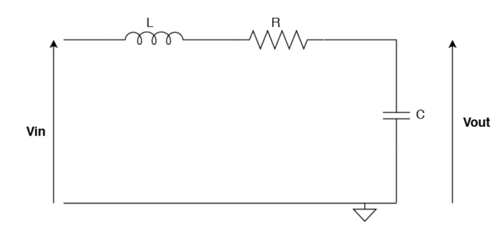
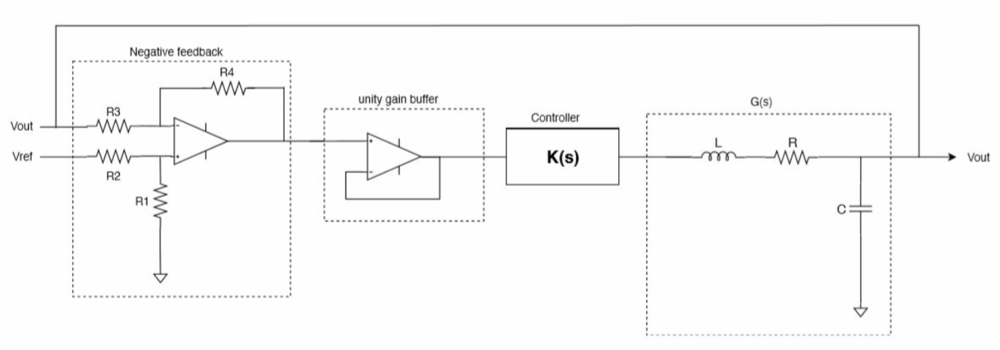
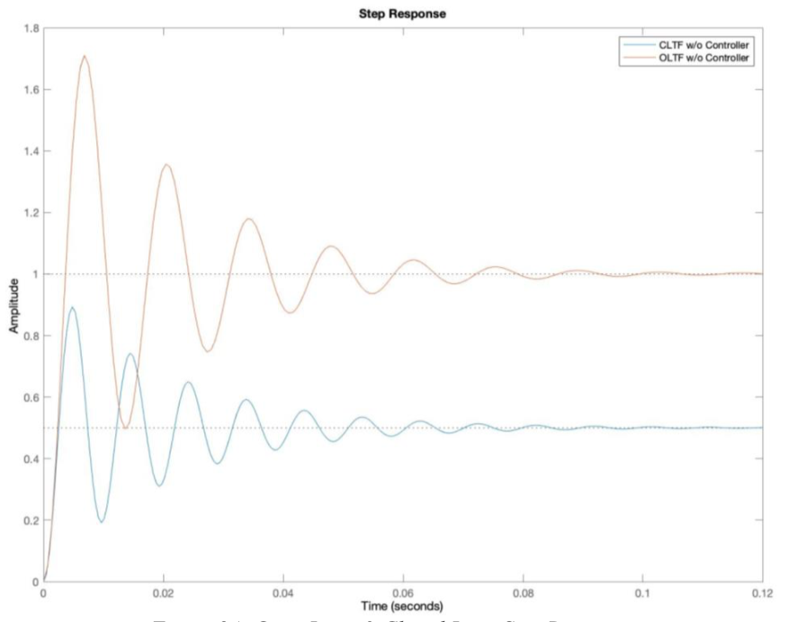
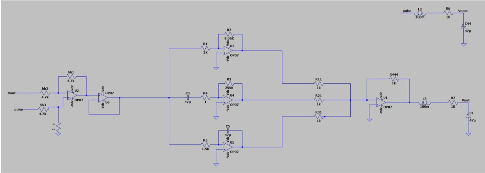
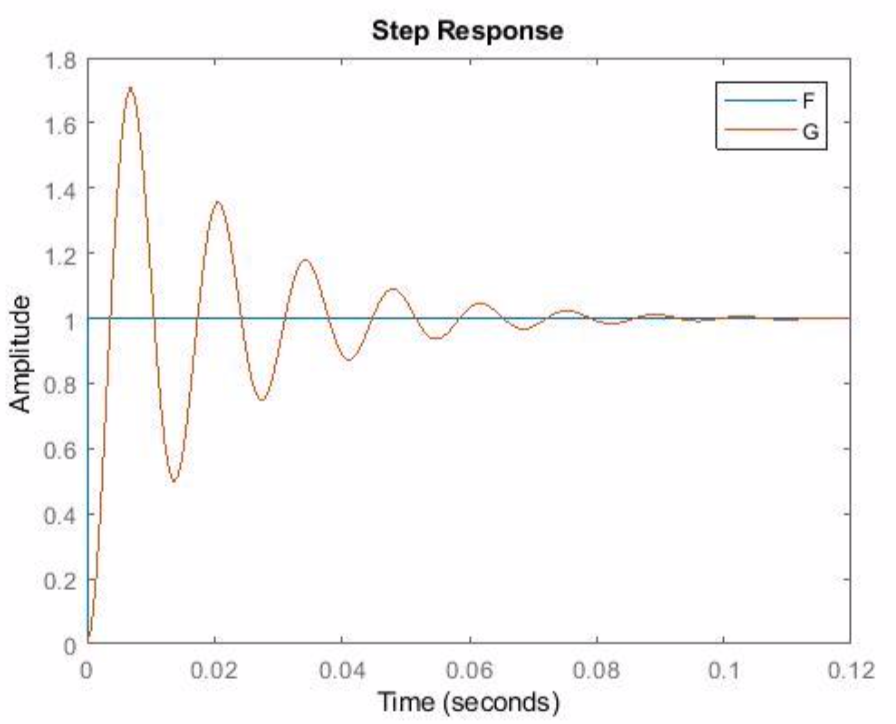
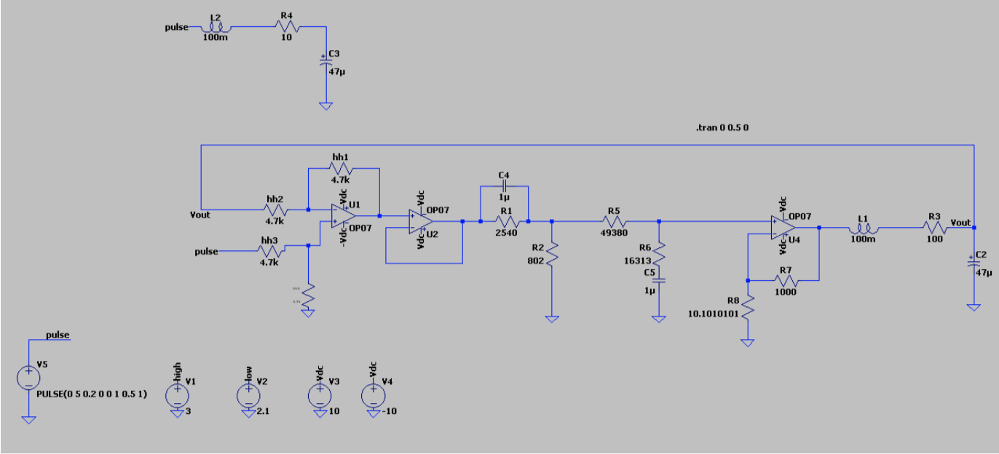
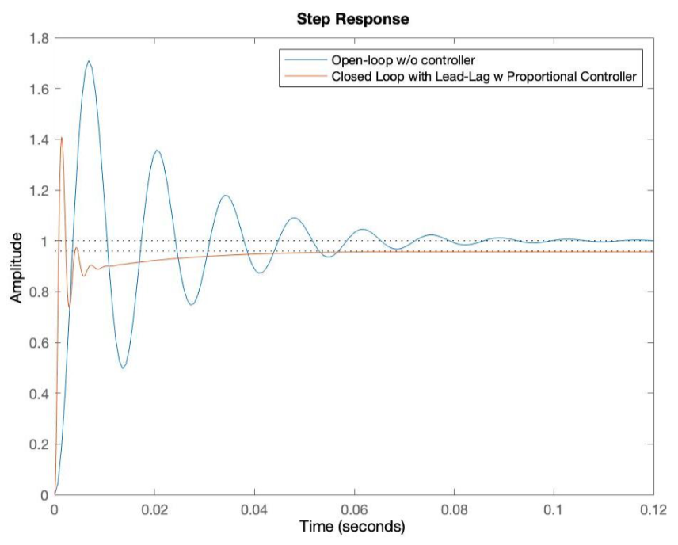
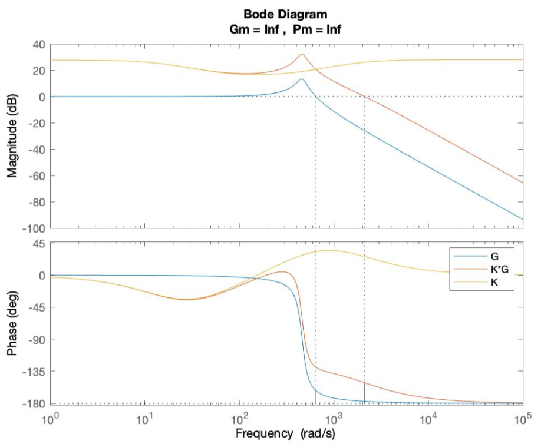

Overview
Control systems are an ubiquitous part of our everyday life in this technologically driven era, be it a simple thermostat or a complicated robotic arm, control theory may be implemented to design stable and efficient systems.
In this project, I explored negative feedback control in electronic systems, PID control, and Lead-lag compensation. The electronic system employed was a simple RLC circuit. PID and Lead-Lag Compensator circuit designs were tested and tuned using MATLAB and LTSpice.
Problem Statement
- Analyze open-loop and closed-loop system step response of an RLC circuit
- Design and implement PID and Lead-Lag compensators
- Compare controller performance using simulation and circuit implementation
Solution
- Modeled the RLC system in MATLAB and LTSpice
- Analyzed open-loop and closed-loop responses
- Designed and implemented Proportional, Integral, Derivative, and combined PID controllers
- Designed and implemented a Lead-lag compensator using Bode and Nyquist plots



Technical Implementation
- MATLAB for system modeling, simulation, and controller tuning
- LTSpice for circuit simulation and validation
- Step response, Bode, and Nyquist analysis





Results & Impact
- Demonstrated improved transient and steady-state response with PID and Lead-lag compensators
- Validated controller performance through simulation and circuit implementation
- Documented design process and results in a detailed report
Lessons Learned
- Negative feedback with a controller/compensator allows the system to keep track of output error and compensate accordingly
- Lag compensator improves steady-state accuracy (low frequencies), lead compensator improves transient response (high frequencies)
- Proportional gain must be chosen carefully to avoid instability
- Lead compensator ≈ PD controller, Lag compensator ≈ PI controller